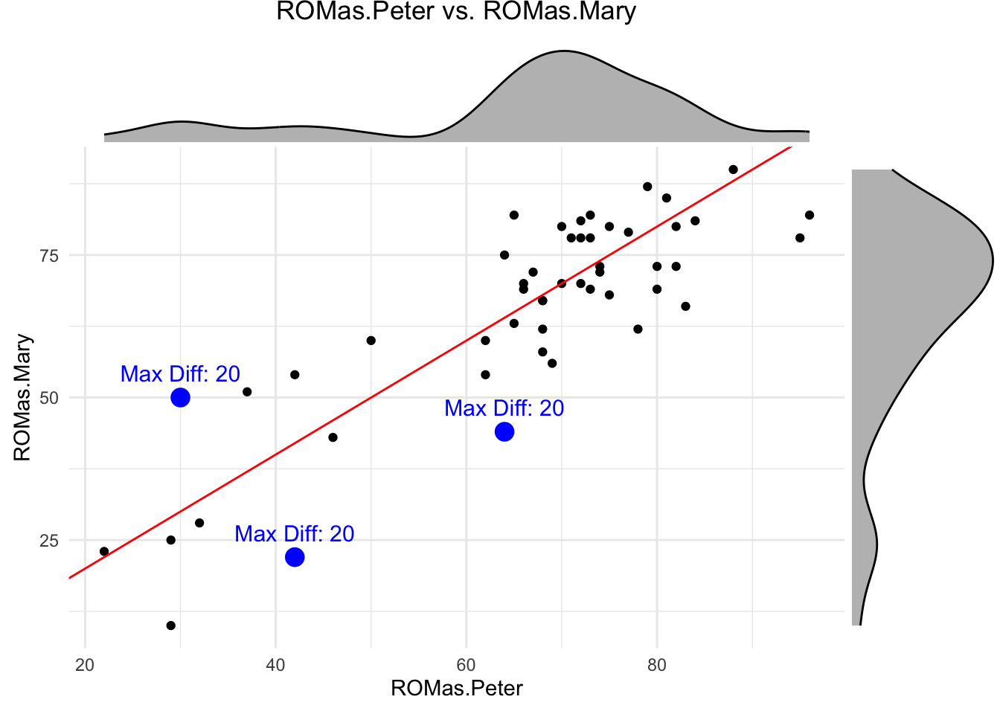

Chapter 2 Reliability and Validity
For this chapter we refer to the book Measurement in Medicine.
I invite you to read the introductory chapters 1 and 2 about concepts, theories and models, and types of measurement.
In general, when conducting a measurement of any sort (laboratory measurements, scores from questionnaires, etc.), we want to be reasonably sure
- that we actually measure what we intend to measure; (validity; chapter 6 in the book);
- that the measurement does not change too much if the underlying conditions are the same (reliability; chapter 5 in the book); and
- that we are able to detect a change if the underlying conditions change (responsiveness; chapter 7 in the book); and
- that we understand the meaning of a change in the measurement (interpretability; chapter 8 in the book).
In this video, Kai jump starts you on reliability and validity.
2.1 Reliability
You can watch this video to get started.
Imagine, you measure a patient (pick your favorite measurement), for example, the range of motion (ROM) of the shoulder.
- If you are interested in how similar your measurements are in comparison to your colleagues, you are trying to determine the so-called inter-rater reliability.
- If you are interested in how similar your measurements are when you measure the same patient twice, you are trying to determine the so-called intra-rater reliability.
Assuming there is a true (but unknown) underlying value (of Range of Motion, ROM), it is clear that measurements will not be exactly the same. Possible influences (potentially) causing different results are:
- the measurement instrument itself (e.g., the goniometer),
- the patient (e.g., mood/motivation),
- the examiner (e.g., mood, influence on patient),
- the environment (e.g., the room temperature).
Note that the true score is defined in our context as the average of all measurements if we would measure repeatedly an infinite number of times.
2.1.1 Peter and Mary’s ROM measurements
The data can be found here. We randomly select 50 measurements from Peter and Mary in 50 different patients, plot their measurements and annotate the absolutely largest one(s). At first the not affected shoulder (nas) and then the affected shoulder (as).
library(pacman)
p_load(tidyverse, readxl)
# Read file
url <- "https://raw.githubusercontent.com/jdegenfellner/Script_QM2_ZHAW/main/data/chapter%205_assignment%201_2_wide.xls"
temp_file <- tempfile(fileext = ".xls")
download.file(url, temp_file, mode = "wb") # mode="wb" is important for binary files
df <- read_excel(temp_file)
head(df)## # A tibble: 6 × 5
## patcode ROMnas.Mary ROMnas.Peter ROMas.Mary ROMas.Peter
## <dbl> <dbl> <dbl> <dbl> <dbl>
## 1 1 90 92 88 95
## 2 2 82 88 82 90
## 3 3 82 88 57 59
## 4 4 89 89 82 81
## 5 5 80 82 48 40
## 6 6 90 96 99 85## [1] 155 5# As in the book, let's randomly select 50 patients.
set.seed(123)
df <- df %>% sample_n(50)
dim(df)## [1] 50 5# "as" = affected shoulder
# "nas" = not affected shoulder
df <- df %>%
mutate(diff = abs(ROMnas.Peter - ROMnas.Mary)) # Compute absolute difference
max_diff_point <- df %>%
dplyr::filter(diff == max(diff, na.rm = TRUE)) # Find the row with the max difference
df %>%
ggplot(aes(x = ROMnas.Peter, y = ROMnas.Mary)) +
geom_point() +
geom_point(data = max_diff_point, aes(x = ROMnas.Peter, y = ROMnas.Mary),
color = "blue", size = 4) + # Highlight max difference point
geom_abline(intercept = 0, slope = 1, color = "red") +
theme_minimal() +
ggtitle("ROMnas.Peter vs. ROMnas.Mary") +
theme(plot.title = element_text(hjust = 0.5)) +
annotate("text", x = max_diff_point$ROMnas.Peter,
y = max_diff_point$ROMnas.Mary,
label = paste0("Max Diff: ", round(max_diff_point$diff, 2)),
vjust = -1, color = "blue", size = 4)## [1] 7.2## [1] 0.2403213The red line represents the line of equality (\(y=x\)). If the measurements are exactly the same, all points would lie on this line. The blue point represents the largest absolute difference in measured Range of Motion (ROM) values between Peter and Mary from the randomly chosen 50 people. Note that the maximum difference in all 155 patients is 35 degrees.
The first simple measure of agreement we could use is the (Pearson) correlation, which measures the strength and direction of a linear relationship between two variables. But correlation does not exactly measure what we want. If there was a bias (e.g., Mary systematically measures 5 degrees more than Peter), correlation would not notice this. (-> exercise later…). It actually is too optimistic about the agreement since it only cares about the linearity and not about a potential bias. \(r=0.2403213\) which indicates a weak positive correlation. Higher values of Peter’s are associated with higher values of Mary’s measurements. But: Knowing Peter’s measurement does not help us to predict Mary’s measurement at such a low correlation (-> exercise later). So, on the not affected shoulder (nas), agreement is really bad.
What about the affected shoulder (as)?
library(ggExtra)
df <- df %>%
mutate(diff = abs(ROMas.Peter - ROMas.Mary)) # Compute absolute difference
max_diff_point <- df %>%
dplyr::filter(diff == max(diff, na.rm = TRUE)) # Find the row with the max difference
p <- df %>%
ggplot(aes(x = ROMas.Peter, y = ROMas.Mary)) +
geom_point() +
geom_point(data = max_diff_point, aes(x = ROMas.Peter, y = ROMas.Mary),
color = "blue", size = 4) + # Highlight max difference point
geom_abline(intercept = 0, slope = 1, color = "red") +
theme_minimal() +
ggtitle("ROMas.Peter vs. ROMas.Mary") +
theme(plot.title = element_text(hjust = 0.5)) +
annotate("text", x = max_diff_point$ROMas.Peter,
y = max_diff_point$ROMas.Mary,
label = paste0("Max Diff: ", round(max_diff_point$diff, 2)),
vjust = -1, color = "blue", size = 4)
# Add marginal histograms
ggMarginal(p, type = "density", fill = "gray", color = "black")
## [1] 7.78## [1] 0.8516653## [1] 1.22In the affected side, the average absolute difference is even larger (\(7.78\)) with a maximum absolute difference of 37 degrees, but the correlation is much higher (\(r=0.8516653\)). See Figure 5.2 in the book.
Btw, this is an an example for using the correlation coefficient even though the marginal distributions are not normal: There are much more measurements in the higher values around 80 than below, say, 60. But the correlation coefficient makes sense for descriptive purposes.
In this case, knowing Peter’s measurement does help us to predict Mary’s measurement (-> exercise later).
2.1.2 Intraclass Correlation Coefficient (ICC)
One way to measure reliability is to use the intraclass correlation coefficient (ICC).
This measure is based on the idea that the observed score \(Y_i\) consists of the true score (ROM) (\(\eta_i\)) and a measurement error (for each person). The proportion of the true score variability to the total variability is the ICC.
In the background one thinks of a statistical model from the Classical Test Theory (CTT). There is
- a true underlying score \(\eta_i\) (for each patient i) and
- an error term \(\varepsilon_i \sim N(0, \sigma_i)\) which is the difference between the true score and
- the observed score \(Y_i\).
\[Y_i = \eta_i + \varepsilon_i\]
It is assumed that \(\eta_i\) and \(\varepsilon_i\) are independent: (\(\mathbb{C}ov(\eta_i, \varepsilon_i)=0\)). This is a nice assumption because now we know (see here) that the variance of the observed score \(Y_i\) is just the sum of the variance of the true score \(\eta_i\) and the variance of the error term \(\varepsilon_i\):
\[\mathbb{V}ar(Y_i) = \mathbb{V}ar(\eta_i) + \mathbb{V}ar(\varepsilon_i)\] \[\sigma_{Y_i}^2 = \sigma_{\eta_i}^2 + \sigma_{\varepsilon_i}^2\]
We want most of the variability in our observed scores \(Y_i\) to be explained by the true but unobservable scores \(\eta_i\). The measurement error \(\varepsilon_i\) should be be comparatively small. If it is large, we are mostly measuring noise or at least not what we want to measure.
How do we get to the theoretical definition of the ICC?
If you either pull two people with the same true but unobservable score \(\eta\) out of the population or measure the same person twice and the score (\(\eta\)) does not change in between, we can define reliability as correlation between these two measurements:
\[Y_1 = \eta + \varepsilon_1\] \[Y_2 = \eta + \varepsilon_2\]
\[cor(Y_1, Y_2) = cor(\eta + \varepsilon_1, \eta + \varepsilon_2) = \frac{Cov(\eta + \varepsilon_1, \eta + \varepsilon_2)}{\sigma_{Y_1}\sigma_{Y_2}} =\]
If we use
- the properties of the covariance,
- the fact that the true score \(\eta\) and the errors \(\varepsilon_i\) are independent, and
- the fact that the errors \(\varepsilon_1\) and \(\varepsilon_2\) are independent, we get:
\[\frac{Cov(\eta, \eta) + Cov(\eta, \varepsilon_2) + Cov(\varepsilon_1, \eta) + Cov(\varepsilon_1, \varepsilon_2)}{\sigma_{Y_1} \sigma_{Y_2}} =\] \[\frac{\sigma_{\eta}^2 + 0 + 0 + 0}{\sigma_{Y_1} \sigma_{Y_2}}\]
Since \(\eta\) is a random variable (we draw a person randomly from the population), it is well defined to talk about the variance of \(\eta\) (i.e., \(\sigma_{\eta}^2\)). I think this aspect may not come across in the book quite so clearly.
Furthermore, it does not matter if I call the measurement \(Y_1\), \(Y_2\) or more general \(Y\), since they have the same variance and true score:
\[\sigma_{Y} = \sigma_{Y_1} = \sigma_{Y_2}\]
Hence, it follows that:
\[cor(Y_1, Y_2) = \frac{\sigma_{\eta}^2}{\sigma_{Y_1}^2} = \frac{\sigma_{\eta}^2}{\sigma_{Y}^2} = \frac{\sigma_{\eta}^2}{\sigma_{Y}^2} = \frac{\sigma_{\eta}^2}{\sigma_{\eta}^2 + \sigma_{\varepsilon}^2}\]
This is the intraclass correlation coefficient (ICC). It is (as seen in the formula above) the proportion of the true score variability to the total variability. It ranges from 0 and 1 (think about why!).
A little manipulation to improve understanding:
Let’s look again at the term for the ICC above and divide the numerator and the denominator by \(\sigma_{\eta}^2\), which we can do, since it is a positive number:
\[\frac{\sigma_{\eta}^2}{\sigma_{\eta}^2 + \sigma_{\varepsilon}^2} = \frac{1}{1 + \frac{\sigma_{\varepsilon}^2}{\sigma_{\eta}^2}}\]
We could call the term \(\frac{\sigma_{\varepsilon}^2}{\sigma_{\eta}^2}\) the noise-to-signal ratio. The higher this ratio, the lower the ICC. The lower the ratio, the higher the ICC.
- If you increase the noise (measurement error \(\sigma_{\varepsilon}^2\)) for fixed true score variability \(\sigma_{\eta}^2\), the ICC decreases, because the denominator increases.
- If you increase the true score variability \(\sigma_{\eta}^2\) for fixed noise \(\sigma_{\varepsilon}^2\), the ICC increases, since the denominator decreases.
Btw, we could also divide by \(\sigma_{\varepsilon}^2\) and get the signal-to-noise ratio.
At first glance, the following statement seems wrong:
In a very homogeneous population (patients have very similar scores/measurements), the ICC might be very low. The reason is that the patient variability \(\sigma_{\eta}^2\) is low and you probably have some measurement error \(\sigma_{\varepsilon}^2\). Hence, if you look at the formula, ICC must be low (for a given measurement error).
On the other hand, if you have a very heterogeneous population (patients have rather different scores/measurements), the ICC might be very high. The reason is that the patient variability \(\sigma_{\eta}^2\) is high and you probably have some measurement error \(\sigma_{\varepsilon}^2\).
What matters is the ratio of the two, as can be seen from the formula above.
Let’s try to calculate the ICC for our data using a statistical model. There are a couple of different
R packages to do this. We will use the irr package.
## Loading required package: lpSolve## Single Score Intraclass Correlation
##
## Model: oneway
## Type : consistency
##
## Subjects = 50
## Raters = 2
## ICC(1) = 0.851
##
## F-Test, H0: r0 = 0 ; H1: r0 > 0
## F(49,50) = 12.4 , p = 7.31e-16
##
## 95%-Confidence Interval for ICC Population Values:
## 0.753 < ICC < 0.913We get the result: \(ICC(1) = 0.851\), which is identical to the correlation coefficient because there is no systematic difference between Peter and Mary.
Since we are forward looking and modern regression model experts, we would like to see if we can get the result using the Bayesian framework.
Below is the model structure.
\[ \begin{array}{rcl} ROM_i &\sim& N(\mu_i, \sigma_{\varepsilon}) \\ \mu_i &=& \alpha[ID] \\ \alpha[ID] &\sim& \text{Normal}(\mu_{\alpha}, \sigma_{\alpha}) \\ \mu_{\alpha} &\sim& \text{Normal}(66, 20) \\ \sigma_{\alpha} &\sim& \text{Uniform}(0,20) \\ \sigma_{\varepsilon} &\sim& \text{Uniform}(0,20) \end{array} \]
Model details:
- \(ROM_i\) is the observed ROM-score for patient \(i\). Every patient has two observations (one each from Mary and Peter). So, for instance \(i=1,2\) could be patient \(ID=1\).
- \(\mu_i\) is the expected value of the observed score for patient \(ID\).
- \(\sigma_{\varepsilon}\) is the standard deviation of the measurement error.
- \(\alpha[ID]\) is the patient-specific intercept (\(=\eta_i\)). Since every patient has a different intercept and they come from a normal distribution, we have a random intercepts model.
- \(\mu_{\alpha}\) is the mean of the prior for the patient-specific intercepts. This is the overall mean of the scores.
- \(\sigma_{\alpha}\) is the standard deviation of the patient-specific intercepts. This is the patient variability! The nice thing about presenting a model in this way is that it’s easier to interpret. \(\sigma_{\alpha}\) says how much the scores of the patients vary in relation to their respective level \(\alpha[ID]\).
- The prior distributions express (as always) our prior beliefs about the parameters.
The ICC is then calculated as the ratio of the between-patient variance and the total variance:
\[\frac{\sigma_{\alpha}^2}{\sigma_{\alpha}^2 + \sigma_{\varepsilon}^2}\]
We did not even notice it, but this was our first multilevel regression model. It is multilevel due to the extra layer of patient-specific intercepts. The observations are obviously clustered within patients, since observations from the same patient are more similar than observations from different patients. If one would run a normal linear regression model, one would ignore this clustering and the assumption of independent error terms would be violated.
Draw model structure … exercise..
This time we fire up the rethinking package and use the ulam function
to fit the model.
This uses Markov Chain Monte Carlo (MCMC) to sample from the posterior
distribution of the parameters.
The
chainsargument specifies how many chains we want to run. A chain is a sequence of points in a space with as many dimensions as there are parameters in the model. It jumps from one point to the next in this parameter space and in doing so, visits the points of the posterior approximately in the correct frequency. Here is an excellent visualization.The
coresargument specifies how many CPU cores we want to use. For larger jobs, one can try to parallelize the chains, which saves some time.
## Loading required package: cmdstanr## This is cmdstanr version 0.8.1.9000## - CmdStanR documentation and vignettes: mc-stan.org/cmdstanr## - CmdStan path: /Users/juergen/.cmdstan/cmdstan-2.34.1## - CmdStan version: 2.34.1##
## A newer version of CmdStan is available. See ?install_cmdstan() to install it.
## To disable this check set option or environment variable cmdstanr_no_ver_check=TRUE.## Loading required package: posterior## This is posterior version 1.6.0##
## Attaching package: 'posterior'## The following objects are masked from 'package:stats':
##
## mad, sd, var## The following objects are masked from 'package:base':
##
## %in%, match## Loading required package: parallel## rethinking (Version 2.42)##
## Attaching package: 'rethinking'## The following object is masked from 'package:purrr':
##
## map## The following object is masked from 'package:stats':
##
## rstudentlibrary(tictoc)
df_long <- df %>%
mutate(ID = row_number()) %>%
dplyr::select(ID,ROMas.Peter, ROMas.Mary) %>%
pivot_longer(cols = c(ROMas.Peter, ROMas.Mary),
names_to = "Rater", values_to = "ROM") %>%
mutate(Rater = factor(Rater))
tic()
m5.1 <- ulam(
alist(
# Likelihood
ROM ~ dnorm(mu, sigma),
# Patient-specific intercepts (random effects)
mu <- a[ID],
a[ID] ~ dnorm(mu_a, sigma_ID), # Hierarchical structure for patients
# Priors for hyperparameters
mu_a ~ dnorm(66, 20), # Population-level mean
sigma_ID ~ dunif(0,20), # Between-patient standard deviation
sigma ~ dunif(0,20) # Residual standard deviation
),
data = df_long,
chains = 8, cores = 4
)## Running MCMC with 8 chains, at most 4 in parallel, with 1 thread(s) per chain...
##
## Chain 1 Iteration: 1 / 1000 [ 0%] (Warmup)
## Chain 1 Iteration: 100 / 1000 [ 10%] (Warmup)
## Chain 1 Iteration: 200 / 1000 [ 20%] (Warmup)
## Chain 1 Iteration: 300 / 1000 [ 30%] (Warmup)
## Chain 1 Iteration: 400 / 1000 [ 40%] (Warmup)
## Chain 1 Iteration: 500 / 1000 [ 50%] (Warmup)
## Chain 1 Iteration: 501 / 1000 [ 50%] (Sampling)
## Chain 1 Iteration: 600 / 1000 [ 60%] (Sampling)
## Chain 1 Iteration: 700 / 1000 [ 70%] (Sampling)
## Chain 1 Iteration: 800 / 1000 [ 80%] (Sampling)
## Chain 1 Iteration: 900 / 1000 [ 90%] (Sampling)
## Chain 1 Iteration: 1000 / 1000 [100%] (Sampling)## Chain 1 Informational Message: The current Metropolis proposal is about to be rejected because of the following issue:## Chain 1 Exception: normal_lpdf: Scale parameter is 0, but must be positive! (in '/var/folders/pm/jd6n6gj10371_bml1gh8sc5w0000gn/T/RtmpugyJzF/model-4094303b9fbc.stan', line 17, column 4 to column 34)## Chain 1 If this warning occurs sporadically, such as for highly constrained variable types like covariance matrices, then the sampler is fine,## Chain 1 but if this warning occurs often then your model may be either severely ill-conditioned or misspecified.## Chain 1## Chain 2 Iteration: 1 / 1000 [ 0%] (Warmup)
## Chain 2 Iteration: 100 / 1000 [ 10%] (Warmup)
## Chain 2 Iteration: 200 / 1000 [ 20%] (Warmup)
## Chain 2 Iteration: 300 / 1000 [ 30%] (Warmup)
## Chain 2 Iteration: 400 / 1000 [ 40%] (Warmup)
## Chain 2 Iteration: 500 / 1000 [ 50%] (Warmup)
## Chain 2 Iteration: 501 / 1000 [ 50%] (Sampling)
## Chain 2 Iteration: 600 / 1000 [ 60%] (Sampling)
## Chain 2 Iteration: 700 / 1000 [ 70%] (Sampling)## Chain 2 Informational Message: The current Metropolis proposal is about to be rejected because of the following issue:## Chain 2 Exception: normal_lpdf: Scale parameter is 0, but must be positive! (in '/var/folders/pm/jd6n6gj10371_bml1gh8sc5w0000gn/T/RtmpugyJzF/model-4094303b9fbc.stan', line 17, column 4 to column 34)## Chain 2 If this warning occurs sporadically, such as for highly constrained variable types like covariance matrices, then the sampler is fine,## Chain 2 but if this warning occurs often then your model may be either severely ill-conditioned or misspecified.## Chain 2## Chain 3 Iteration: 1 / 1000 [ 0%] (Warmup)
## Chain 3 Iteration: 100 / 1000 [ 10%] (Warmup)
## Chain 3 Iteration: 200 / 1000 [ 20%] (Warmup)
## Chain 3 Iteration: 300 / 1000 [ 30%] (Warmup)
## Chain 3 Iteration: 400 / 1000 [ 40%] (Warmup)
## Chain 3 Iteration: 500 / 1000 [ 50%] (Warmup)
## Chain 3 Iteration: 501 / 1000 [ 50%] (Sampling)
## Chain 3 Iteration: 600 / 1000 [ 60%] (Sampling)
## Chain 3 Iteration: 700 / 1000 [ 70%] (Sampling)
## Chain 3 Iteration: 800 / 1000 [ 80%] (Sampling)
## Chain 3 Iteration: 900 / 1000 [ 90%] (Sampling)
## Chain 3 Iteration: 1000 / 1000 [100%] (Sampling)
## Chain 4 Iteration: 1 / 1000 [ 0%] (Warmup)
## Chain 4 Iteration: 100 / 1000 [ 10%] (Warmup)
## Chain 4 Iteration: 200 / 1000 [ 20%] (Warmup)
## Chain 4 Iteration: 300 / 1000 [ 30%] (Warmup)
## Chain 4 Iteration: 400 / 1000 [ 40%] (Warmup)
## Chain 4 Iteration: 500 / 1000 [ 50%] (Warmup)
## Chain 4 Iteration: 501 / 1000 [ 50%] (Sampling)
## Chain 4 Iteration: 600 / 1000 [ 60%] (Sampling)
## Chain 4 Iteration: 700 / 1000 [ 70%] (Sampling)
## Chain 4 Iteration: 800 / 1000 [ 80%] (Sampling)
## Chain 4 Iteration: 900 / 1000 [ 90%] (Sampling)
## Chain 4 Iteration: 1000 / 1000 [100%] (Sampling)## Chain 4 Informational Message: The current Metropolis proposal is about to be rejected because of the following issue:## Chain 4 Exception: normal_lpdf: Scale parameter is 0, but must be positive! (in '/var/folders/pm/jd6n6gj10371_bml1gh8sc5w0000gn/T/RtmpugyJzF/model-4094303b9fbc.stan', line 17, column 4 to column 34)## Chain 4 If this warning occurs sporadically, such as for highly constrained variable types like covariance matrices, then the sampler is fine,## Chain 4 but if this warning occurs often then your model may be either severely ill-conditioned or misspecified.## Chain 4## Chain 1 finished in 0.1 seconds.
## Chain 3 finished in 0.1 seconds.
## Chain 4 finished in 0.1 seconds.
## Chain 2 Iteration: 800 / 1000 [ 80%] (Sampling)
## Chain 2 Iteration: 900 / 1000 [ 90%] (Sampling)
## Chain 2 Iteration: 1000 / 1000 [100%] (Sampling)
## Chain 5 Iteration: 1 / 1000 [ 0%] (Warmup)
## Chain 5 Iteration: 100 / 1000 [ 10%] (Warmup)
## Chain 5 Iteration: 200 / 1000 [ 20%] (Warmup)
## Chain 5 Iteration: 300 / 1000 [ 30%] (Warmup)
## Chain 5 Iteration: 400 / 1000 [ 40%] (Warmup)
## Chain 5 Iteration: 500 / 1000 [ 50%] (Warmup)
## Chain 5 Iteration: 501 / 1000 [ 50%] (Sampling)
## Chain 5 Iteration: 600 / 1000 [ 60%] (Sampling)
## Chain 5 Iteration: 700 / 1000 [ 70%] (Sampling)
## Chain 5 Iteration: 800 / 1000 [ 80%] (Sampling)
## Chain 5 Iteration: 900 / 1000 [ 90%] (Sampling)
## Chain 5 Iteration: 1000 / 1000 [100%] (Sampling)## Chain 5 Informational Message: The current Metropolis proposal is about to be rejected because of the following issue:## Chain 5 Exception: normal_lpdf: Scale parameter is 0, but must be positive! (in '/var/folders/pm/jd6n6gj10371_bml1gh8sc5w0000gn/T/RtmpugyJzF/model-4094303b9fbc.stan', line 17, column 4 to column 34)## Chain 5 If this warning occurs sporadically, such as for highly constrained variable types like covariance matrices, then the sampler is fine,## Chain 5 but if this warning occurs often then your model may be either severely ill-conditioned or misspecified.## Chain 5## Chain 6 Iteration: 1 / 1000 [ 0%] (Warmup)
## Chain 6 Iteration: 100 / 1000 [ 10%] (Warmup)
## Chain 6 Iteration: 200 / 1000 [ 20%] (Warmup)
## Chain 6 Iteration: 300 / 1000 [ 30%] (Warmup)
## Chain 6 Iteration: 400 / 1000 [ 40%] (Warmup)
## Chain 6 Iteration: 500 / 1000 [ 50%] (Warmup)
## Chain 6 Iteration: 501 / 1000 [ 50%] (Sampling)
## Chain 6 Iteration: 600 / 1000 [ 60%] (Sampling)
## Chain 6 Iteration: 700 / 1000 [ 70%] (Sampling)
## Chain 6 Iteration: 800 / 1000 [ 80%] (Sampling)## Chain 6 Informational Message: The current Metropolis proposal is about to be rejected because of the following issue:## Chain 6 Exception: normal_lpdf: Scale parameter is 0, but must be positive! (in '/var/folders/pm/jd6n6gj10371_bml1gh8sc5w0000gn/T/RtmpugyJzF/model-4094303b9fbc.stan', line 17, column 4 to column 34)## Chain 6 If this warning occurs sporadically, such as for highly constrained variable types like covariance matrices, then the sampler is fine,## Chain 6 but if this warning occurs often then your model may be either severely ill-conditioned or misspecified.## Chain 6## Chain 7 Iteration: 1 / 1000 [ 0%] (Warmup)
## Chain 7 Iteration: 100 / 1000 [ 10%] (Warmup)
## Chain 7 Iteration: 200 / 1000 [ 20%] (Warmup)
## Chain 7 Iteration: 300 / 1000 [ 30%] (Warmup)
## Chain 7 Iteration: 400 / 1000 [ 40%] (Warmup)
## Chain 7 Iteration: 500 / 1000 [ 50%] (Warmup)
## Chain 7 Iteration: 501 / 1000 [ 50%] (Sampling)
## Chain 7 Iteration: 600 / 1000 [ 60%] (Sampling)
## Chain 7 Iteration: 700 / 1000 [ 70%] (Sampling)
## Chain 7 Iteration: 800 / 1000 [ 80%] (Sampling)
## Chain 7 Iteration: 900 / 1000 [ 90%] (Sampling)
## Chain 7 Iteration: 1000 / 1000 [100%] (Sampling)
## Chain 2 finished in 0.2 seconds.
## Chain 5 finished in 0.1 seconds.
## Chain 6 Iteration: 900 / 1000 [ 90%] (Sampling)
## Chain 6 Iteration: 1000 / 1000 [100%] (Sampling)
## Chain 6 finished in 0.1 seconds.
## Chain 7 finished in 0.1 seconds.
## Chain 8 Iteration: 1 / 1000 [ 0%] (Warmup)
## Chain 8 Iteration: 100 / 1000 [ 10%] (Warmup)
## Chain 8 Iteration: 200 / 1000 [ 20%] (Warmup)
## Chain 8 Iteration: 300 / 1000 [ 30%] (Warmup)
## Chain 8 Iteration: 400 / 1000 [ 40%] (Warmup)
## Chain 8 Iteration: 500 / 1000 [ 50%] (Warmup)
## Chain 8 Iteration: 501 / 1000 [ 50%] (Sampling)
## Chain 8 Iteration: 600 / 1000 [ 60%] (Sampling)
## Chain 8 Iteration: 700 / 1000 [ 70%] (Sampling)
## Chain 8 Iteration: 800 / 1000 [ 80%] (Sampling)
## Chain 8 Iteration: 900 / 1000 [ 90%] (Sampling)
## Chain 8 Iteration: 1000 / 1000 [100%] (Sampling)
## Chain 8 finished in 0.1 seconds.
##
## All 8 chains finished successfully.
## Mean chain execution time: 0.1 seconds.
## Total execution time: 0.6 seconds.## 6.582 sec elapsed## mean sd 5.5% 94.5% rhat ess_bulk
## a[1] 67.722244 4.9090800 59.884240 75.424230 1.0011883 6619.262
## a[2] 64.111654 4.7840605 56.528447 71.776798 1.0034783 6191.276
## a[3] 86.987105 4.8248501 79.310842 94.721499 1.0021836 6533.691
## a[4] 76.488312 4.8772869 68.688592 84.377506 1.0004241 6088.506
## a[5] 58.652587 4.9146668 50.800481 66.376233 1.0057245 6894.371
## a[6] 69.286318 4.9001887 61.446915 77.135439 1.0023860 6440.228
## a[7] 69.630175 4.7214488 62.093989 77.274188 1.0042853 6102.224
## a[8] 67.364715 4.8073624 59.760551 74.940179 1.0004233 6926.255
## a[9] 70.982913 4.8029119 63.473921 78.838160 1.0021779 6096.437
## a[10] 81.123297 4.6829024 73.463408 88.601603 1.0000833 5882.855
## a[11] 70.525946 4.7789205 62.916758 78.015190 1.0027020 6057.395
## a[12] 42.158971 4.9255574 34.330380 50.142874 1.0052952 5608.430
## a[13] 86.981146 4.8049263 79.173926 94.829309 1.0006401 5697.280
## a[14] 74.665706 4.6060512 67.261235 81.970150 1.0042568 6217.659
## a[15] 76.383198 4.8629608 68.375808 84.099854 1.0019507 5393.146
## a[16] 34.941636 4.9924846 27.056167 43.018477 1.0015714 6091.685
## a[17] 84.803446 4.7374711 77.144124 92.406944 0.9993908 4742.513
## a[18] 64.997487 4.9643186 56.943773 72.939016 1.0035173 6046.231
## a[19] 63.285164 4.9025730 55.533948 71.178041 1.0013061 5093.825
## a[20] 79.685208 5.0087033 71.658232 87.571054 1.0025818 5732.622
## a[21] 30.284397 4.9534314 22.471539 38.175759 1.0029669 4993.642
## a[22] 62.717165 4.8429270 55.056809 70.508550 1.0042888 5186.047
## a[23] 67.369138 4.7935870 59.691637 75.021504 1.0015468 5712.044
## a[24] 81.364895 4.6500222 73.951702 88.744605 1.0010820 5840.154
## a[25] 54.960936 4.6723859 47.304353 62.472893 1.0031483 6486.986
## a[26] 67.484558 4.8629666 59.694329 75.237344 1.0024718 5631.800
## a[27] 75.662864 4.6822039 68.289372 83.149005 1.0015293 5142.724
## a[28] 81.458669 4.7261292 73.931357 89.044628 1.0007963 6429.453
## a[29] 46.319123 4.9454046 38.515295 54.285881 1.0011816 5884.281
## a[30] 61.257367 4.7772157 53.562560 68.978274 1.0023302 5689.914
## a[31] 23.509215 4.9033830 15.777376 31.510781 1.0033955 4020.937
## a[32] 74.135907 4.9851734 66.120570 81.958539 1.0022234 6227.534
## a[33] 70.503386 4.7654367 62.891725 78.072130 1.0023102 5314.875
## a[34] 76.514259 4.7673813 69.060676 84.004384 1.0056486 6295.756
## a[35] 75.552330 4.7650873 68.063417 83.238239 1.0059815 6458.817
## a[36] 69.318470 4.8028313 61.733604 76.842796 1.0019923 5624.692
## a[37] 49.567778 4.8517137 42.000534 57.348616 1.0001428 5345.948
## a[38] 73.807516 4.8704217 66.012632 81.610347 1.0014698 5593.351
## a[39] 72.757513 4.8058223 65.331446 80.543411 0.9996477 6046.893
## a[40] 45.817525 4.8801249 38.090789 53.659197 1.0017618 5810.945
## a[41] 73.683223 4.8798317 65.754844 81.586076 0.9997154 5788.226
## a[42] 26.096569 5.0020037 18.151000 34.085055 1.0035820 5645.769
## a[43] 32.929828 4.9839276 25.060965 40.934064 1.0009925 4969.622
## a[44] 74.142579 4.8767249 66.482373 81.844996 1.0027673 5518.837
## a[45] 76.914062 4.8315152 69.190795 84.479135 1.0021492 5799.564
## a[46] 73.639372 4.7714194 66.006190 81.297628 1.0014867 5772.895
## a[47] 55.859204 4.8616217 48.241338 63.875677 1.0018038 5633.257
## a[48] 69.603460 4.7802544 61.990560 77.160122 1.0024286 5065.542
## a[49] 72.402414 4.6825454 65.012180 79.784921 1.0015697 5911.021
## a[50] 72.770000 4.8603442 65.014248 80.455220 1.0029222 7919.236
## mu_a 65.555333 2.4626739 61.598423 69.494927 1.0017301 4186.431
## sigma_ID 16.613184 1.6346644 14.010696 19.244560 1.0024463 1915.575
## sigma 7.081393 0.7331837 6.011486 8.331337 1.0004015 2066.538post <- extract.samples(m5.1)
var_patients <- mean(post$sigma_ID^2) # Between-patient variance
var_residual <- mean(post$sigma^2) # Residual variance
var_patients / (var_patients + var_residual) # ICC## [1] 0.8461117In the output from precis(m5.1, depth = 2) above we see
- all 50 intercept estimates for each patient:
a[ID] mu_ais the overall intercept.sigma_IDis the patient variability.sigmais the residual variability.
We just square the sigmas to get the variances.
Remember: In the background, there is just a statistical model to predict the outcome. Depending on the predictors, we get different models and probably different ICCs.
We can also estimate a random intercept model with the lme4 package using
the command lmerin the Frequentist framework. No priors.
## Loading required package: Matrix##
## Attaching package: 'Matrix'## The following objects are masked from 'package:tidyr':
##
## expand, pack, unpack## Linear mixed model fit by REML ['lmerMod']
## Formula: ROM ~ (1 | ID)
## Data: df_long
##
## REML criterion at convergence: 791
##
## Scaled residuals:
## Min 1Q Median 3Q Max
## -1.91875 -0.44821 0.00964 0.51325 1.47941
##
## Random effects:
## Groups Name Variance Std.Dev.
## ID (Intercept) 270.99 16.462
## Residual 47.35 6.881
## Number of obs: 100, groups: ID, 50
##
## Fixed effects:
## Estimate Std. Error t value
## (Intercept) 65.590 2.428 27.02## Groups Name Variance
## ID (Intercept) 270.99
## Residual 47.35## [1] 0.8512597The expression Formula: ROM ~ (1 | ID) specifies that we want to fit a model with
a random intercept. This means that every patient (ID) gets its own intercept
which is drawn from a normal distribution. We will probably talk about this in the
next lecture (Methodenvertiefung) in greater detail.
So far, we have only looked at the general \(ICC\) (ICC1 in the psychoutput)
(see also page 106 in the book).
There, we have not yet explicitely considered a bias (=systematic difference between the raters) that the raters could have. In the book, they introduce a bias of 5 degrees (Mary measures 5 degrees more than Peter on average).
The model für ICC 2 and 3 in the psych output explicitely considers this
(systematic) difference that could occur between the raters.
This results in an extra term in the denominator
of the ICC, an additional variance component.
From the same statistical model (!) we take the variance components to calculate:
\[ICC_{agreement} = \frac{\sigma_{\alpha}^2}{\sigma_{\alpha}^2 + \mathbf{\sigma_{rater}^2} + \sigma_{\varepsilon}^2}\]
where \(\sigma_{rater}^2\) is the variance due to systematic rater differences.
\[ICC_{consistency} = \frac{\sigma_{\alpha}^2}{\sigma_{\alpha}^2 + \sigma_{\varepsilon}^2}\]
We will now introduce the 5 degree bias and use our Bayesian framework to estimate the ICC. By introducing a bias, we should see a lower ICC. Note, that the prediction quality of Mary’s scores given Peter’s scores should not change, since we would only shift Mary’s scores down by 5 degrees, which would not disturb the linear regression model. We can always shift the points to where we want them to be. We do that for instance when we scale or standardize the data.
Admitted, the Bayesian version in this case takes longer and is more complex. The advantage is still that it’s fully probabilistic and one could work with detailed prior information, especially for smaller smaple sizes.
Anyhow, let’s try to give the model equations considering the introduced bias. This is the model for both \(ICC_{agreement}\) and \(ICC_{consistency}\)!
\[ \begin{array}{rcl} ROM_i &\sim& N(\mu_i, \sigma_{\varepsilon}) \\ \mu_i &=& \alpha[ID] + \beta[Rater] \\ \alpha[ID] &\sim& \text{Normal}(\mu_{\alpha}, \sigma_{\alpha}) \\ \beta[Rater] &\sim& \text{Normal}(0, \sigma_{\beta}) \\ \mu_{\alpha} &\sim& \text{Normal}(66, 20) \\ \sigma_{\alpha} &\sim& \text{Exp}(0.5) \\ \sigma_{\beta} &\sim& \text{Exp}(1) \\ \sigma_{\varepsilon} &\sim& \text{Exp}(1) \end{array} \]
As you can see, \(\mu_i\) now consists of the patient-specific intercept \(\alpha[ID]\) (everyone of the 50 patients gets one) and the rater-specific effect \(\beta[Rater]\) (Mary and Peter get one). So, in total, we have three sources of variability:
- the patient variability \(\sigma_{\alpha}\),
- the rater variability \(\sigma_{\beta}\),
- and the residual variability \(\sigma_{\varepsilon}\).
Note, that if Peter measures each of the 50 patients twice, the systematic difference between Peter’s measurements would be zero. Of course, one could be creative and think of a learning effect or something.
Draw model structure … exercise..
## [conflicted] Will prefer posterior::sd over any other package.df_long_bias <- df_long %>%
mutate(ROM = ROM + ifelse(Rater == "ROMas.Mary", 5, 0))
head(df_long_bias)## # A tibble: 6 × 3
## ID Rater ROM
## <int> <fct> <dbl>
## 1 1 ROMas.Peter 66
## 2 1 ROMas.Mary 75
## 3 2 ROMas.Peter 65
## 4 2 ROMas.Mary 68
## 5 3 ROMas.Peter 96
## 6 3 ROMas.Mary 87set.seed(123)
m5.2 <- ulam(
alist(
# Likelihood
ROM ~ dnorm(mu, sigma_eps),
# Model for mean ROM with patient and rater effects
mu <- alpha[ID] + beta[Rater],
# Patient-specific random effects
alpha[ID] ~ dnorm(mu_alpha, sigma_alpha),
# Rater effect (Peter/Mary)
beta[Rater] ~ dnorm(0, sigma_beta),
# Priors for hyperparameters
mu_alpha ~ dnorm(66, 10), # Population mean ROM
sigma_alpha ~ dexp(0.5), # Between-patient SD (less aggressive shrinkage)
sigma_beta ~ dexp(1), # Rater SD (better regularization)
sigma_eps ~ dexp(1) # Residual SD (prevents over-shrinkage)
),
data = df_long_bias,
chains = 8, cores = 4
)## Running MCMC with 8 chains, at most 4 in parallel, with 1 thread(s) per chain...
##
## Chain 1 Iteration: 1 / 1000 [ 0%] (Warmup)
## Chain 1 Iteration: 100 / 1000 [ 10%] (Warmup)
## Chain 1 Iteration: 200 / 1000 [ 20%] (Warmup)## Chain 1 Informational Message: The current Metropolis proposal is about to be rejected because of the following issue:
## Chain 1 Exception: normal_lpdf: Scale parameter is 0, but must be positive! (in '/var/folders/pm/jd6n6gj10371_bml1gh8sc5w0000gn/T/RtmpugyJzF/model-40946483280.stan', line 21, column 4 to column 45)
## Chain 1 If this warning occurs sporadically, such as for highly constrained variable types like covariance matrices, then the sampler is fine,
## Chain 1 but if this warning occurs often then your model may be either severely ill-conditioned or misspecified.
## Chain 1## Chain 2 Iteration: 1 / 1000 [ 0%] (Warmup)## Chain 2 Informational Message: The current Metropolis proposal is about to be rejected because of the following issue:
## Chain 2 Exception: normal_lpdf: Scale parameter is 0, but must be positive! (in '/var/folders/pm/jd6n6gj10371_bml1gh8sc5w0000gn/T/RtmpugyJzF/model-40946483280.stan', line 21, column 4 to column 45)
## Chain 2 If this warning occurs sporadically, such as for highly constrained variable types like covariance matrices, then the sampler is fine,
## Chain 2 but if this warning occurs often then your model may be either severely ill-conditioned or misspecified.
## Chain 2## Chain 3 Iteration: 1 / 1000 [ 0%] (Warmup)
## Chain 3 Iteration: 100 / 1000 [ 10%] (Warmup)
## Chain 4 Iteration: 1 / 1000 [ 0%] (Warmup)
## Chain 4 Iteration: 100 / 1000 [ 10%] (Warmup)
## Chain 4 Iteration: 200 / 1000 [ 20%] (Warmup)
## Chain 4 Iteration: 300 / 1000 [ 30%] (Warmup)## Chain 4 Informational Message: The current Metropolis proposal is about to be rejected because of the following issue:
## Chain 4 Exception: normal_lpdf: Scale parameter is 0, but must be positive! (in '/var/folders/pm/jd6n6gj10371_bml1gh8sc5w0000gn/T/RtmpugyJzF/model-40946483280.stan', line 21, column 4 to column 45)
## Chain 4 If this warning occurs sporadically, such as for highly constrained variable types like covariance matrices, then the sampler is fine,
## Chain 4 but if this warning occurs often then your model may be either severely ill-conditioned or misspecified.
## Chain 4## Chain 1 Iteration: 300 / 1000 [ 30%] (Warmup)
## Chain 1 Iteration: 400 / 1000 [ 40%] (Warmup)
## Chain 1 Iteration: 500 / 1000 [ 50%] (Warmup)
## Chain 1 Iteration: 501 / 1000 [ 50%] (Sampling)
## Chain 1 Iteration: 600 / 1000 [ 60%] (Sampling)
## Chain 1 Iteration: 700 / 1000 [ 70%] (Sampling)
## Chain 1 Iteration: 800 / 1000 [ 80%] (Sampling)
## Chain 1 Iteration: 900 / 1000 [ 90%] (Sampling)
## Chain 1 Iteration: 1000 / 1000 [100%] (Sampling)
## Chain 2 Iteration: 100 / 1000 [ 10%] (Warmup)
## Chain 2 Iteration: 200 / 1000 [ 20%] (Warmup)
## Chain 2 Iteration: 300 / 1000 [ 30%] (Warmup)
## Chain 2 Iteration: 400 / 1000 [ 40%] (Warmup)
## Chain 2 Iteration: 500 / 1000 [ 50%] (Warmup)
## Chain 2 Iteration: 501 / 1000 [ 50%] (Sampling)
## Chain 2 Iteration: 600 / 1000 [ 60%] (Sampling)
## Chain 2 Iteration: 700 / 1000 [ 70%] (Sampling)
## Chain 2 Iteration: 800 / 1000 [ 80%] (Sampling)
## Chain 2 Iteration: 900 / 1000 [ 90%] (Sampling)
## Chain 3 Iteration: 200 / 1000 [ 20%] (Warmup)
## Chain 3 Iteration: 300 / 1000 [ 30%] (Warmup)
## Chain 3 Iteration: 400 / 1000 [ 40%] (Warmup)
## Chain 3 Iteration: 500 / 1000 [ 50%] (Warmup)
## Chain 3 Iteration: 501 / 1000 [ 50%] (Sampling)
## Chain 3 Iteration: 600 / 1000 [ 60%] (Sampling)
## Chain 3 Iteration: 700 / 1000 [ 70%] (Sampling)
## Chain 3 Iteration: 800 / 1000 [ 80%] (Sampling)
## Chain 3 Iteration: 900 / 1000 [ 90%] (Sampling)
## Chain 3 Iteration: 1000 / 1000 [100%] (Sampling)
## Chain 4 Iteration: 400 / 1000 [ 40%] (Warmup)
## Chain 4 Iteration: 500 / 1000 [ 50%] (Warmup)
## Chain 4 Iteration: 501 / 1000 [ 50%] (Sampling)
## Chain 4 Iteration: 600 / 1000 [ 60%] (Sampling)
## Chain 4 Iteration: 700 / 1000 [ 70%] (Sampling)
## Chain 4 Iteration: 800 / 1000 [ 80%] (Sampling)
## Chain 4 Iteration: 900 / 1000 [ 90%] (Sampling)
## Chain 4 Iteration: 1000 / 1000 [100%] (Sampling)
## Chain 1 finished in 0.2 seconds.
## Chain 3 finished in 0.2 seconds.
## Chain 4 finished in 0.2 seconds.
## Chain 2 Iteration: 1000 / 1000 [100%] (Sampling)
## Chain 5 Iteration: 1 / 1000 [ 0%] (Warmup)
## Chain 5 Iteration: 100 / 1000 [ 10%] (Warmup)
## Chain 5 Iteration: 200 / 1000 [ 20%] (Warmup)
## Chain 5 Iteration: 300 / 1000 [ 30%] (Warmup)## Chain 5 Informational Message: The current Metropolis proposal is about to be rejected because of the following issue:
## Chain 5 Exception: normal_lpdf: Scale parameter is 0, but must be positive! (in '/var/folders/pm/jd6n6gj10371_bml1gh8sc5w0000gn/T/RtmpugyJzF/model-40946483280.stan', line 21, column 4 to column 45)
## Chain 5 If this warning occurs sporadically, such as for highly constrained variable types like covariance matrices, then the sampler is fine,
## Chain 5 but if this warning occurs often then your model may be either severely ill-conditioned or misspecified.
## Chain 5## Chain 6 Iteration: 1 / 1000 [ 0%] (Warmup)
## Chain 6 Iteration: 100 / 1000 [ 10%] (Warmup)
## Chain 6 Iteration: 200 / 1000 [ 20%] (Warmup)
## Chain 6 Iteration: 300 / 1000 [ 30%] (Warmup)
## Chain 7 Iteration: 1 / 1000 [ 0%] (Warmup)
## Chain 7 Iteration: 100 / 1000 [ 10%] (Warmup)
## Chain 7 Iteration: 200 / 1000 [ 20%] (Warmup)
## Chain 7 Iteration: 300 / 1000 [ 30%] (Warmup)
## Chain 7 Iteration: 400 / 1000 [ 40%] (Warmup)## Chain 7 Informational Message: The current Metropolis proposal is about to be rejected because of the following issue:
## Chain 7 Exception: normal_lpdf: Scale parameter is 0, but must be positive! (in '/var/folders/pm/jd6n6gj10371_bml1gh8sc5w0000gn/T/RtmpugyJzF/model-40946483280.stan', line 21, column 4 to column 45)
## Chain 7 If this warning occurs sporadically, such as for highly constrained variable types like covariance matrices, then the sampler is fine,
## Chain 7 but if this warning occurs often then your model may be either severely ill-conditioned or misspecified.
## Chain 7## Chain 2 finished in 0.3 seconds.
## Chain 5 Iteration: 400 / 1000 [ 40%] (Warmup)
## Chain 5 Iteration: 500 / 1000 [ 50%] (Warmup)
## Chain 5 Iteration: 501 / 1000 [ 50%] (Sampling)
## Chain 5 Iteration: 600 / 1000 [ 60%] (Sampling)
## Chain 5 Iteration: 700 / 1000 [ 70%] (Sampling)
## Chain 5 Iteration: 800 / 1000 [ 80%] (Sampling)
## Chain 5 Iteration: 900 / 1000 [ 90%] (Sampling)
## Chain 5 Iteration: 1000 / 1000 [100%] (Sampling)
## Chain 6 Iteration: 400 / 1000 [ 40%] (Warmup)
## Chain 6 Iteration: 500 / 1000 [ 50%] (Warmup)
## Chain 6 Iteration: 501 / 1000 [ 50%] (Sampling)
## Chain 6 Iteration: 600 / 1000 [ 60%] (Sampling)
## Chain 6 Iteration: 700 / 1000 [ 70%] (Sampling)
## Chain 6 Iteration: 800 / 1000 [ 80%] (Sampling)
## Chain 6 Iteration: 900 / 1000 [ 90%] (Sampling)
## Chain 6 Iteration: 1000 / 1000 [100%] (Sampling)
## Chain 7 Iteration: 500 / 1000 [ 50%] (Warmup)
## Chain 7 Iteration: 501 / 1000 [ 50%] (Sampling)
## Chain 7 Iteration: 600 / 1000 [ 60%] (Sampling)
## Chain 7 Iteration: 700 / 1000 [ 70%] (Sampling)
## Chain 7 Iteration: 800 / 1000 [ 80%] (Sampling)
## Chain 7 Iteration: 900 / 1000 [ 90%] (Sampling)
## Chain 7 Iteration: 1000 / 1000 [100%] (Sampling)
## Chain 8 Iteration: 1 / 1000 [ 0%] (Warmup)
## Chain 5 finished in 0.2 seconds.
## Chain 6 finished in 0.2 seconds.
## Chain 7 finished in 0.2 seconds.
## Chain 8 Iteration: 100 / 1000 [ 10%] (Warmup)
## Chain 8 Iteration: 200 / 1000 [ 20%] (Warmup)
## Chain 8 Iteration: 300 / 1000 [ 30%] (Warmup)
## Chain 8 Iteration: 400 / 1000 [ 40%] (Warmup)
## Chain 8 Iteration: 500 / 1000 [ 50%] (Warmup)
## Chain 8 Iteration: 501 / 1000 [ 50%] (Sampling)
## Chain 8 Iteration: 600 / 1000 [ 60%] (Sampling)
## Chain 8 Iteration: 700 / 1000 [ 70%] (Sampling)
## Chain 8 Iteration: 800 / 1000 [ 80%] (Sampling)
## Chain 8 Iteration: 900 / 1000 [ 90%] (Sampling)
## Chain 8 Iteration: 1000 / 1000 [100%] (Sampling)
## Chain 8 finished in 0.2 seconds.
##
## All 8 chains finished successfully.
## Mean chain execution time: 0.2 seconds.
## Total execution time: 0.8 seconds.## Warning: 27 of 4000 (1.0%) transitions ended with a divergence.
## See https://mc-stan.org/misc/warnings for details.## mean sd 5.5% 94.5% rhat ess_bulk
## alpha[1] 70.221230 4.6957078 62.9122250 77.6751330 1.003921 3956.8010
## alpha[2] 66.637192 4.7935979 59.2921655 74.3219425 1.000703 4048.1323
## alpha[3] 89.391211 4.8460529 81.8305935 96.9301420 1.001484 3581.3337
## alpha[4] 79.068129 4.7090695 71.7267400 86.7491720 1.002625 4088.4617
## alpha[5] 61.248545 4.6824417 53.8962900 68.7503010 1.002206 3886.9310
## alpha[6] 71.711300 4.5314894 64.4525160 79.0005630 1.001403 3806.2065
## alpha[7] 72.121798 4.7349544 64.6055805 79.6941110 1.001856 3482.5502
## alpha[8] 69.834714 4.7037178 62.3043635 77.3545565 1.000583 4054.8858
## alpha[9] 73.526363 4.7369985 66.0854635 81.0876520 1.001352 3708.7551
## alpha[10] 83.497318 4.7172575 76.0272720 91.0849000 1.001394 3871.4522
## alpha[11] 73.114282 4.6041905 65.8139360 80.4195110 1.002261 3330.7789
## alpha[12] 44.827995 4.8132889 37.2627160 52.4649335 1.003939 3774.3717
## alpha[13] 89.401919 4.7509654 81.8033940 96.8927025 1.001166 3733.9925
## alpha[14] 77.155674 4.7663782 69.3451470 84.8327385 1.002594 3611.6344
## alpha[15] 78.928227 4.8283770 71.2416295 86.6386025 1.005149 3462.8282
## alpha[16] 37.537016 4.8929538 29.6438890 45.4816100 1.000967 3802.3178
## alpha[17] 87.205983 4.6947001 79.8024680 94.7725850 1.004141 3205.6678
## alpha[18] 67.618180 4.6490608 60.4495525 74.8906485 1.000691 3565.7257
## alpha[19] 65.734938 4.7038246 58.2243970 73.1307710 1.003272 3021.3632
## alpha[20] 82.148125 4.6634709 74.8132215 89.4844660 1.001809 3525.2622
## alpha[21] 32.959556 4.7365812 25.6872720 40.6902550 1.000230 3896.3144
## alpha[22] 65.312545 4.7691775 57.6339360 72.9769385 1.001701 3888.3018
## alpha[23] 69.922455 4.6557324 62.4829305 77.3353785 1.004454 3949.3830
## alpha[24] 84.028041 4.8666565 76.4453060 91.8557125 1.002520 4582.8271
## alpha[25] 57.576782 4.6027933 50.1384940 65.0507070 1.003696 3883.0937
## alpha[26] 69.844403 4.5423390 62.4724325 77.0730070 1.002214 3588.0981
## alpha[27] 78.181829 4.6438020 70.9217780 85.6579100 1.000977 3573.7990
## alpha[28] 83.976099 4.7519956 76.3497625 91.4832750 1.000891 3836.6036
## alpha[29] 48.888864 4.6981990 41.3078680 56.4819905 1.001334 4153.8714
## alpha[30] 63.812328 4.7111640 56.4071725 71.2587825 1.003047 3935.6824
## alpha[31] 26.098770 4.8818137 18.3637725 33.9304330 1.003445 4068.8549
## alpha[32] 76.676408 4.7365322 69.0211035 83.9915570 1.002364 3823.5694
## alpha[33] 73.055353 4.6273537 65.9705020 80.5753430 1.002063 4039.5757
## alpha[34] 78.963166 4.7676436 71.3900570 86.3736705 1.001748 3403.3517
## alpha[35] 78.075230 4.7744829 70.5443095 85.7926805 1.001281 4222.4407
## alpha[36] 71.652651 4.7601329 64.0808175 79.2662110 1.000708 4471.9540
## alpha[37] 52.084764 4.7084537 44.8942315 59.7080135 1.002348 3439.9837
## alpha[38] 76.121385 4.8822293 68.3599335 83.7502705 1.002290 4006.6888
## alpha[39] 75.451394 4.7905587 67.7880930 82.8390550 1.000887 3454.6782
## alpha[40] 48.408307 4.7026185 40.9218930 56.1687365 1.003060 3999.9664
## alpha[41] 76.176540 4.6262898 68.7745580 83.5991630 1.004537 3963.8804
## alpha[42] 28.812970 4.7775508 21.1928615 36.4243750 1.003746 3855.7962
## alpha[43] 35.646945 4.6876761 28.1427865 43.0427785 1.000564 4114.5370
## alpha[44] 76.736915 4.6819911 69.0549725 83.9337520 1.003016 3594.7244
## alpha[45] 79.377066 4.6099939 71.8918425 86.7122600 1.001080 4016.1217
## alpha[46] 76.266121 4.6936374 68.9066090 83.8324250 1.000442 4007.8677
## alpha[47] 58.467633 4.5906174 51.1480830 65.6998370 1.002588 3396.4658
## alpha[48] 72.114214 4.7995591 64.4240875 79.7356615 1.005283 3715.8719
## alpha[49] 74.771082 4.6137731 67.3251525 82.0455495 1.001963 3457.0385
## alpha[50] 75.414102 4.7692631 67.7589025 83.1030340 1.001202 4211.2151
## beta[1] 1.196482 1.4699703 -0.7591575 3.6725132 1.005792 932.0193
## beta[2] -1.260339 1.5058841 -3.8538230 0.6600649 1.007244 857.8581
## mu_alpha 67.979401 2.5706977 63.9069175 72.0885400 1.003032 1842.7425
## sigma_alpha 15.457249 1.6142987 13.1380645 18.2104485 1.000383 4277.2078
## sigma_beta 1.685571 1.0527940 0.3547305 3.5587972 1.001191 1581.1771
## sigma_eps 6.713486 0.6434269 5.7619659 7.7933864 1.004713 2175.7641## 52 vector or matrix parameters hidden. Use depth=2 to show them.## mean sd 5.5% 94.5% rhat ess_bulk
## mu_alpha 67.979401 2.5706977 63.9069175 72.088540 1.003032 1842.742
## sigma_alpha 15.457249 1.6142987 13.1380645 18.210449 1.000383 4277.208
## sigma_beta 1.685571 1.0527940 0.3547305 3.558797 1.001191 1581.177
## sigma_eps 6.713486 0.6434269 5.7619659 7.793386 1.004713 2175.764# check systematic difference for rater in posterior
post <- extract.samples(m5.2)
mean(post$beta[,1] - post$beta[,2])## [1] 2.456821# ICC agreement:
post <- extract.samples(m5.2)
(var_patients <- mean(post$sigma_alpha^2)) # Between-patient variance## [1] 241.5319## [1] 3.949248## [1] 45.48479## [1] 0.8301037# 0.8033613 (sigma_alpha ~ dexp(1))
# 0.83 (sigma_alpha ~ dexp(0.5))
# ICC (Single_fixed_raters) = ICC3 in psych output =
var_patients / (var_patients + var_residual)## [1] 0.8415256It should be noted that this ICC is very sensitive to the choice of the prior. If you choose too agressive priors for the standard deviations \(\sigma_{\alpha}, \sigma_{\beta}, \sigma_{\varepsilon}\), you will get a too low ICC.
We will probably talk about this in the next lecture (Methodenvertiefung) in greater detail.
I have played around a little with the parameters in the exponential priors
to get the desired result which compares nicely to the two alternative methods below:
using the psych package and with the lmer
package. Both use a Frequentist random intercept model in the background.
Using a package like psych just gives a more convenient interface to
elicit the ICC.
psych package:
library(psych)
library(conflicted)
# needs wide format
#conflicts_prefer(dplyr::select)
df_wide <- df_long_bias %>%
pivot_wider(names_from = Rater, values_from = ROM)
df_wide_values <- df_wide %>% dplyr::select(-ID)
psych::ICC(df_wide_values) # ICC1 = 0.83## Call: psych::ICC(x = df_wide_values)
##
## Intraclass correlation coefficients
## type ICC F df1 df2 p lower bound upper bound
## Single_raters_absolute ICC1 0.83 11 49 50 1.1e-14 0.72 0.90
## Single_random_raters ICC2 0.83 12 49 49 1.4e-15 0.71 0.91
## Single_fixed_raters ICC3 0.85 12 49 49 1.4e-15 0.75 0.91
## Average_raters_absolute ICC1k 0.91 11 49 50 1.1e-14 0.84 0.95
## Average_random_raters ICC2k 0.91 12 49 49 1.4e-15 0.83 0.95
## Average_fixed_raters ICC3k 0.92 12 49 49 1.4e-15 0.86 0.95
##
## Number of subjects = 50 Number of Judges = 2
## See the help file for a discussion of the other 4 McGraw and Wong estimates,lmer package:
## Linear mixed model fit by REML ['lmerMod']
## Formula: ROM ~ (1 | ID) + (1 | Rater)
## Data: df_long_bias
##
## REML criterion at convergence: 793.2
##
## Scaled residuals:
## Min 1Q Median 3Q Max
## -1.87448 -0.46270 0.00272 0.57820 1.45008
##
## Random effects:
## Groups Name Variance Std.Dev.
## ID (Intercept) 270.882 16.458
## Rater (Intercept) 6.193 2.489
## Residual 47.557 6.896
## Number of obs: 100, groups: ID, 50; Rater, 2
##
## Fixed effects:
## Estimate Std. Error t value
## (Intercept) 68.090 2.998 22.71## Groups Name Variance
## ID (Intercept) 270.882
## Rater (Intercept) 6.193
## Residual 47.557# Groups Name Variance
# ID (Intercept) 270.882
# Rater (Intercept) 6.193
# Residual 47.557
# ICC (Single_random_raters) = ICC2 in psych output
270.882 / (270.882 + 6.193 + 47.557) # ## [1] 0.8344279## [1] 0.85065592.1.3 Explanation of ICCs in the psych output
If you want to know all the details, refer to Shrout and Fleiss (1979).
The help-function ?psych::ICC contains a relatively good and much shorter explanation.
The variance formulae given in the help-file are probably somewhat confusing.
We try to stick to the notation of the book.
Let’s talk about the first three ICCs in the psych output:.
Single_raters_absolute ICC1: According to the help file: “Each target [i.e. patient] is rated by a different judge [i.e. rater] and the judges are selected at random.” So, variability due to raters is implied and cannot be disentangled. This is formally not our situation, since we have only two raters and 50 patients. But for this case, we do not care who measures, since we do not model it, hence, we cannot know if there are systematic differences between the raters. There might as well be 50 raters doing their thing, or just 2 as in our case. This is the ICC we calculated above; the overall ICC. in the book and based on the following model:
\[Y_{ij} = \eta_i + \varepsilon_i\] where \(i \in {1,...,50}\) is the patient and \(j \in {1,2}\) is the measurement (\(=50*2=100\) rows in long format). Note that we do not mention a rater here, since we do not care who took the measurement. It is not part of the model. The ICC is then calculated as:
\[ICC = \frac{\sigma_{\eta}^2}{\sigma_{\eta}^2 + \sigma_{\varepsilon}^2}\]
whereas we could get the variance components from either the posterior in the Bayesian setting or from the
lmeroutput in the Frequentist setting.Single_random_raters ICC2: ICC2 (\(=ICC_{agreement}\) in the book) and ICC3 (\(=ICC_{consistency}\) in the book) are based on the same statistical model. The only difference is that ICC2 assumes that the (in our case) 2 raters are randomly selected from a larger pool of raters, hence, the rater variability must be explicitely considered and yields a potentially smaller value for the ICC. Compared to ICC1, we have repeated measurements from the same raters in 50 patients. That’s why we can model their bias. One observation would not be enough. The help file says: “A random sample of k judges rate each target. The measure is one of absolute agreement in the ratings.” A random sample of k (2 in our case) judges means that we cannot rule out the variability due to raters (you get a variety of them and their biases are different).
\[Y_{ij} = \eta_i + \beta_j + \varepsilon_i\] where \(i \in {1,...,50}\) is the patient, \(j \in {1,2}\) is the rater (doing one measurement in each patient). The ICC is then calculated as:
\[ICC_{agreement} = \frac{\sigma_{\eta}^2}{\sigma_{\eta}^2 +\mathbf{\sigma_{rater}^2} + \sigma_{\varepsilon}^2}\]
Single_fixed_raters ICC3: ICC3 (\(=ICC_{consistency}\) in the book) is based on the same model as ICC2, but assumes that the raters are fixed. This means that the raters are the same for all patients in the future study. So, we have considered the rater variability in the model (which was possible due to the repeated measurements from the same raters in 50 patients), but do not care since Mary and Peter will be the people doing the future measurements, not other therapists. If you fix a random variable (raters in this case), variance is zero. The help file says: “A fixed set of k judges rate each target. There is no generalization to a larger population of judges.” The ICC is then calculated as:
\[ICC_{consistency} = \frac{\sigma_{\eta}^2}{\sigma_{\eta}^2 + \sigma_{\varepsilon}^2}\]
ICC1 and ICC3 are not identical, since ICC1 does not consider the rater variability in the model. They are based on different statistiacal models. ICC2 and ICC3 are based on the same model.
If there is no systematic difference between raters, all 3 ICCs and the Pearson correlation (r) are the same (see Figure 5.3 in the book).
\(ICC_{consistency}\) vs. \(ICC_{agreement}\): The latter is used, when we need Peter and Mary to concur in their measurements. Patients coming to Peters practice will get the same (or very similar) “diagnosis” (ROM-value) from Mary. When there is systematic difference (line is shifted downwards in Figure 5.3), this cannot be guaranteed. If we only need Peter and Mary to rank the patients in the same order, we can use \(ICC_{consistency}\).
2.1.4 Summary Peter and Mary, with and without bias
Below, we summarize the results for the ICCs (calculated with psych)
for the unbiased and biased case (Mary measures on average 5 degrees more than peter).
library(pacman)
p_load(conflicted, tidyverse, flextable)
# Ensure select() from dplyr is used
#conflicted::conflicts_prefer("select", "dplyr")
# Unbiased ICC Calculation
df_wide_unbiased <- df_long %>%
pivot_wider(names_from = Rater, values_from = ROM)
df_wide_values_unbiased <- df_wide_unbiased %>% dplyr::select(-ID)
icc_results_unbiased <- psych::ICC(df_wide_values_unbiased)## boundary (singular) fit: see help('isSingular')# Extract relevant ICC values
icc_unbiased_df <- icc_results_unbiased$results %>%
dplyr::select(type, ICC) %>%
rename(`Unbiased ICC` = ICC)
# Biased ICC Calculation
df_wide_biased <- df_long_bias %>%
pivot_wider(names_from = Rater, values_from = ROM)
df_wide_values_biased <- df_wide_biased %>% dplyr::select(-ID)
icc_results_biased <- psych::ICC(df_wide_values_biased)
# Extract relevant ICC values
icc_biased_df <- icc_results_biased$results %>%
dplyr::select(type, ICC) %>%
dplyr::rename(`Biased ICC` = ICC)
icc_merged_df <- left_join(icc_unbiased_df,
icc_biased_df,
by = "type") %>%
slice(1:3)
ft <- flextable(icc_merged_df) %>%
flextable::set_header_labels(type = "ICC Type") %>%
flextable::set_caption("Intraclass Correlation Coefficients - Unbiased vs. Biased") %>%
flextable::set_table_properties(width = .5, layout = "autofit")
ftICC Type | Unbiased ICC | Biased ICC |
|---|---|---|
ICC1 | 0.8512574 | 0.8328336 |
ICC2 | 0.8512574 | 0.8344281 |
ICC3 | 0.8512574 | 0.8506562 |
The left column shows that the ICCs are identical for the unbiased case. Specifically, ICC2 (=\(ICC_{agreement}\) in the book) and ICC3 (\(ICC_{consistency}\) in the book) are based on the same model which explicitely considers a potential bias between the raters. Since there is none, the ICCs are the same.
In the biased case, there is as systematic difference between Mary and Peter.
ICC1 does not care about it and shows a somewhat lower value compared to before (\(0.833\)). The reason is because the agreement line is in a plot with Mary on Y and Peter on X shifted upwards by 5 degrees. If you would introduce a bias of 15 degrees, the ICC would be even lower (\(ICC1 = 0.61\), \(ICC2 = 0.65\) -> verify as exercise). The unbiased column would of course stay the same.
ICC2 now considers the bias of 5 degrees. The model knows about the shift. If we compare the variance components of ICC1 and ICC2, we see:
## [1] "Model for ICC1: ROM ~ (1 | ID)"## Groups Name Variance
## ID (Intercept) 267.79
## Residual 53.75## [1] "Model for ICC2 (and 3): ROM ~ (1 | ID) + (1 | Rater)"## Groups Name Variance
## ID (Intercept) 270.882
## Rater (Intercept) 6.193
## Residual 47.557The residual variance is smaller in the model with the rater effect. The model explains the data better, since it knows about the bias.
Look at the \(\sigma_{\varepsilon}\) of the two models, they add up:
\[\sigma_{\varepsilon, ICC1}^2 = \sigma_{\varepsilon, ICC23}^2 + \sigma_{Rater}^2\] \[53.75 = 47.557 + 6.193\]
Hence, we just split up the error differently by considering the bias.
The patient variability (ID Variance in the output) is slightly higher:
\(270.882\) compared to \(267.79\) before.
In the first model, patient variability was conflated with rater variation because rater effects
were not explicitly modeled. For this reason, ID Variance increases slightly.
It is a rather small increase, so ICC1 and ICC2 are not that different.
For a bias of 15 degrees, the additivity of the variances remains. The patient variability increases from \(223.89\) (ICC1) to \(270.882\) (ICC2), hence the difference in ICCs is larger (\(ICC1=0.613\) vs. \(ICC2=0.657\)).
ICC3 considers the bias in the model but does not include it in the measurement error since the raters are fixed.
2.1.5 Difference between correlation and ICC
If we do not introduce a bias in the data, the correlation coefficient is the same as the ICC (as seen above). On page 110, Figure 5.3, the authors show nicely what the difference is between the correlation coefficient and the ICC. It is also shown how \(ICC_{agreement}\) and \(ICC_{consistency}\) change with the bias.
\(ICC_{consistency}\) stays \(1\) if bias is introduced (assuming a hypothetical perfect agreement before). Peter and Mary still rank the patients in the same order.
Correlation \(r\) is always 1, no matter at what slope (\(\ne 0\)) the line is. It measures the strength and direction of the linear relationship between two variables.
\(ICC_{agreement}\) changes as soon as you depart from the 45 degree line with respect to slope or shift the line up or down (i.e., introduce a bias).
This is a good point in time to think for a moment about the type of measurement for agreement with respect to costs. The ICC below weights each measurement equally, although one larger outlier (large discrepancy between Peter and Mary) may influence the ICC notably (exercise later). One could easily think of a situation where overall agreement measure like the ICC is not adequate since, for instance, exceeding a certain difference threshold could decide between life and death.
2.1.6 Bad news about the ICC?
Let’s try to expand our intuitive understanding of what an ICC of 0.8 or so means. For simplicity, we take the overall ICC, which is equal to the correlation coefficient, if there is no bias present.
The following example demonstrates the meaning of the Test-Retest reliability of the Hospital Anxiety and Depression Scale - Anxiety subscale (HADS-A). We could take all kinds of other scores where ICC values and a minimally clinically important difference (MCID) is given. Briefly, the MCID is the smallest change in a score that is considered important to the patient. For example, a 5% change in BMI is (in some populations) considered meaningful.
Specifically, we:
- Simulate two correlated measurement at two time points (TP1 and TP2) to get predetermined ICC (\(=\rho\)).
- Calculate the Intraclass Correlation Coefficient (ICC).
- Compare the Minimal Clinically Important Difference (MCID) to prediction intervals.
- Visualize how often a clinically meaningful change of 1.68 points is detected, even if no real change has occurred.
The code can be found here and in the github repo of the script. In the code, the sources for the ICC and MCID are cited.
# ICC and Test-Retest-Reliability
library(pacman)
p_load(tidyverse, lme4, conflicted, psych, MASS)
# MCID Minimal Clinically Important Difference---------
# HADS score---------
# The Hospital Anxiety and Depression Scale
# Test-Retest-Reliability:
# https://doi.org/10.1016/S1361-9004(02)00029-8
# Use the numbers from here (Table 1):
# https://www.sciencedirect.com/science/article/abs/pii/S1361900402000298
# for demonstration purposes.
# Minimal Clinically Important Difference (MCID) for HADS-A:
# https://pmc.ncbi.nlm.nih.gov/articles/PMC2459149/
# Not exactly the same population as shift workers, but suffices for demonstration purposes.
# MCID HADS anxiety score and 1.68 (1.48–1.87)
# Simplification: Score is deemed to be continuous.
# Create 2 correlated measurements:
# Use HADS-A Anxiety subscale
# Use n=100, instead of n=24 for more stability
sigma1 <- 3.93 # Standard deviation of variable 1
sigma2 <- 3.52 # Standard deviation of variable 2
rho <- 0.82 # Correlation
cov_matrix <- matrix(c(sigma1^2, rho * sigma1 * sigma2,
rho * sigma1 * sigma2, sigma2^2), nrow = 2)
n <- 100
set.seed(188) # For reproducibility
samples <- mvrnorm(n = n, mu = c(7.92, 7.83), Sigma = cov_matrix)
df <- as.data.frame(samples)
colnames(df) <- c("TP1", "TP2")
plot(df, main = "Scatterplot of Multivariate Normal Samples",
xlab = "TP1", ylab = "TP2", pch = 19, col = rgb(0, 0, 1, alpha = 0.5))# https://en.wikipedia.org/wiki/Intraclass_correlation#Modern_ICC_definitions:_simpler_formula_but_positive_bias
# ICC should be the correlation within the group (i.e. patient)
cor(df$TP1, df$TP2, method = "pearson") # ~0.8-0.9## [1] 0.8184881## boundary (singular) fit: see help('isSingular')## Call: ICC(x = df)
##
## Intraclass correlation coefficients
## type ICC F df1 df2 p lower bound upper bound
## Single_raters_absolute ICC1 0.82 10 99 100 5.6e-26 0.74 0.87
## Single_random_raters ICC2 0.82 10 99 99 8.7e-26 0.74 0.87
## Single_fixed_raters ICC3 0.82 10 99 99 8.7e-26 0.74 0.87
## Average_raters_absolute ICC1k 0.90 10 99 100 5.6e-26 0.85 0.93
## Average_random_raters ICC2k 0.90 10 99 99 8.7e-26 0.85 0.93
## Average_fixed_raters ICC3k 0.90 10 99 99 8.7e-26 0.85 0.93
##
## Number of subjects = 100 Number of Judges = 2
## See the help file for a discussion of the other 4 McGraw and Wong estimates,# check manually
df_mod <- data.frame(id = 1:n, df$TP1, df$TP2)
names(df_mod) <- c("id", "TP1", "TP2")
df_mod_long <- df_mod %>% pivot_longer(cols = c(TP1, TP2), names_to = "time_point", values_to = "score")
mod <- lme4::lmer(score ~ time_point + (1|id), data = df_mod_long)
variance_df <- as.data.frame(summary(mod)$varcor)
# ICC=
variance_df$sdcor[1]^2 / (variance_df$sdcor[1]^2 + variance_df$sdcor[2]^2) # ~0.9## [1] 0.8170566## [1] 7.964553## [1] 7.782436#data.frame(TP1 = df$TP1, TP2 = df$TP2) %>%
# ggplot(aes(x = TP1, y = TP2)) +
# geom_point() +
# xlab("Measurement of patients at time point 1") +
# ylab("Measurement of the same patients at time point 2")
# Range for HADS-A should be 0-21
# (according to "The Hospital Anxiety and Depression Scale, Zigmond & Snaith, 1983")
df <- data.frame(TP1 = df$TP1, TP2 = df$TP2) %>%
dplyr::filter(TP1 >= 0) %>%
dplyr::filter(TP2 >= 0) %>% # negative not possible
dplyr::filter(TP1 <= 21) %>%
dplyr::filter(TP2 <= 21) # max. score is 21
df## TP1 TP2
## 1 13.003089 14.539674
## 2 6.980669 9.312346
## 3 17.751972 12.957041
## 4 10.344489 6.995323
## 5 7.861347 7.568915
## 6 12.892886 11.703021
## 7 5.478497 7.952075
## 8 9.583384 7.515242
## 9 7.519451 4.043160
## 10 11.499240 11.652541
## 11 6.468033 6.660218
## 12 6.048513 3.471018
## 13 7.697834 9.065112
## 14 12.254369 8.811619
## 15 1.614857 4.614998
## 16 10.619077 10.125575
## 17 9.419930 8.518226
## 18 2.937867 4.456727
## 19 8.236834 11.196117
## 20 8.954668 12.675367
## 21 12.320423 12.768905
## 22 12.314754 10.081370
## 23 2.160930 6.959311
## 24 6.832022 6.613443
## 25 1.093221 4.571882
## 26 9.725573 9.440133
## 27 1.355585 4.171266
## 28 7.752631 9.028429
## 29 8.764755 5.020493
## 30 6.347606 3.694110
## 31 5.375775 4.932552
## 32 11.278457 10.079779
## 33 6.740993 6.092677
## 34 5.812009 4.668937
## 35 4.349329 6.225931
## 36 9.895140 12.126645
## 37 11.148574 9.213335
## 38 2.047422 2.430490
## 39 6.486131 6.032311
## 40 5.645763 7.611138
## 41 6.726079 10.071178
## 42 5.755609 7.947849
## 43 10.642786 9.117806
## 44 5.141220 5.304112
## 45 2.642085 1.933020
## 46 7.684671 6.640758
## 47 9.262502 8.538370
## 48 16.254728 15.559716
## 49 7.156983 6.978574
## 50 12.081541 10.935277
## 51 11.764108 9.705782
## 52 11.558231 10.001998
## 53 7.207230 8.702822
## 54 13.271195 12.305426
## 55 8.662632 9.794167
## 56 7.202986 3.372489
## 57 5.857393 10.673803
## 58 12.606715 8.961083
## 59 11.081861 13.549278
## 60 4.900769 5.337160
## 61 15.309336 11.034889
## 62 14.589373 13.720623
## 63 13.671753 10.925029
## 64 12.180305 12.781404
## 65 1.762711 5.561035
## 66 3.140391 6.372191
## 67 5.492213 5.996299
## 68 4.466991 8.914347
## 69 2.502974 2.742313
## 70 12.667048 9.000329
## 71 4.580641 6.028937
## 72 11.858807 10.368234
## 73 4.537198 2.709857
## 74 7.419888 10.998858
## 75 4.879237 4.827545
## 76 13.618764 9.062266
## 77 14.472807 14.418930
## 78 7.952580 7.896180
## 79 1.912410 3.428163
## 80 7.801004 2.616797
## 81 10.336987 11.858491
## 82 8.417477 10.399787
## 83 5.491992 7.532053
## 84 7.596043 3.712851
## 85 6.912368 8.655686
## 86 6.201155 2.107871
## 87 11.707088 13.145075
## 88 3.443512 1.810893
## 89 12.406231 12.175912
## 90 7.231295 8.403967
## 91 11.070856 10.877902
## 92 14.508512 13.754604
## 93 9.936188 10.610818
## 94 6.590862 3.507825
## 95 11.660322 10.722280mod <- lm(TP2 ~ TP1, data = df)
pred <- predict(mod, df, interval = "prediction")
# How wide are the prediction intervals for a patient?
as.data.frame(pred) %>% mutate(width_prediction_interval = upr - lwr) # width of the prediction interval 8-10 points!## fit lwr upr width_prediction_interval
## 1 11.517789 7.32000445 15.715573 8.395568
## 2 7.260698 3.09356695 11.427829 8.334262
## 3 14.874649 10.57640522 19.172893 8.596488
## 4 9.638494 5.46784345 13.809144 8.341301
## 5 7.883226 3.71851506 12.047937 8.329422
## 6 11.439889 7.24365214 15.636126 8.392473
## 7 6.198852 2.02213714 10.375568 8.353431
## 8 9.100489 4.93366030 13.267318 8.333658
## 9 7.641549 3.47617950 11.806918 8.330738
## 10 10.454757 6.27494432 14.634571 8.359626
## 11 6.898329 2.72869927 11.067959 8.339260
## 12 6.601781 2.42951087 10.774051 8.344541
## 13 7.767643 3.60266181 11.932624 8.329962
## 14 10.988538 6.80055090 15.176525 8.375974
## 15 3.467747 -0.76481930 7.700313 8.465132
## 16 9.832593 5.66013066 14.005055 8.344925
## 17 8.984947 4.81870889 13.151186 8.332477
## 18 4.402947 0.19450442 8.611390 8.416885
## 19 8.148648 3.98424793 12.313048 8.328800
## 20 8.656066 4.49106133 12.821072 8.330010
## 21 11.035230 6.84644646 15.224014 8.377568
## 22 11.031223 6.84250820 15.219938 8.377430
## 23 3.853751 -0.36823502 8.075737 8.443972
## 24 7.155623 2.98785021 11.323396 8.335546
## 25 3.099016 -1.14446756 7.342499 8.486967
## 26 9.200999 5.03359021 13.368407 8.334817
## 27 3.284474 -0.95341998 7.522367 8.475787
## 28 7.806378 3.64149615 11.971259 8.329763
## 29 8.521822 4.35713015 12.686514 8.329383
## 30 6.813202 2.64286933 10.983535 8.340666
## 31 6.126241 1.94861984 10.303862 8.355242
## 32 10.298692 6.12094325 14.476441 8.355497
## 33 7.091277 2.92307764 11.259477 8.336399
## 34 6.434603 2.26060789 10.608598 8.347990
## 35 5.400673 1.21224884 9.589097 8.376848
## 36 9.320861 5.15268035 13.489042 8.336361
## 37 10.206881 6.03027765 14.383484 8.353206
## 38 3.773515 -0.45059795 7.997629 8.448227
## 39 6.911122 2.74159427 11.080650 8.339056
## 40 6.317088 2.14177936 10.492397 8.350617
## 41 7.080735 2.91246298 11.249007 8.336544
## 42 6.394735 2.22030395 10.569166 8.348862
## 43 9.849352 5.67672294 14.021982 8.345259
## 44 5.960440 1.78063088 10.140249 8.359619
## 45 4.193867 -0.01952182 8.407256 8.426777
## 46 7.758338 3.59333195 11.923345 8.330013
## 47 8.873666 4.70791894 13.039413 8.331494
## 48 13.816287 9.55673194 18.075843 8.519111
## 49 7.385330 3.21887319 11.551787 8.332914
## 50 10.866371 6.68040625 15.052336 8.371929
## 51 10.641986 6.45950156 14.824470 8.364969
## 52 10.496456 6.31606656 14.676846 8.360780
## 53 7.420848 3.25456616 11.587130 8.332564
## 54 11.707306 7.50560608 15.909006 8.403400
## 55 8.449634 4.28506471 12.614202 8.329138
## 56 7.417848 3.25155183 11.584145 8.332593
## 57 6.466683 2.29303270 10.640334 8.347301
## 58 11.237603 7.04521442 15.429991 8.384777
## 59 10.159723 5.98368848 14.335757 8.352069
## 60 5.790471 1.60824613 9.972696 8.364450
## 61 13.148015 8.90959977 17.386429 8.476830
## 62 12.639092 8.41504000 16.863143 8.448103
## 63 11.990450 7.78250179 16.198399 8.415897
## 64 10.936184 6.74907482 15.123294 8.374219
## 65 3.572261 -0.65735481 7.801876 8.459231
## 66 4.546106 0.34090074 8.751312 8.410411
## 67 6.208548 2.03195085 10.385144 8.353194
## 68 5.483845 1.29682048 9.670870 8.374049
## 69 4.095533 -0.12027142 8.311337 8.431609
## 70 11.280250 7.08707078 15.473429 8.386359
## 71 5.564181 1.37846891 9.749893 8.371425
## 72 10.708926 6.52543503 14.892417 8.366982
## 73 5.533472 1.34726300 9.719682 8.372419
## 74 7.571170 3.40554231 11.736798 8.331256
## 75 5.775251 1.59280130 9.957701 8.364900
## 76 11.952994 7.74589920 16.160088 8.414189
## 77 12.556694 8.33482530 16.778563 8.443737
## 78 7.947716 3.78312039 12.112312 8.329192
## 79 3.678079 -0.54861400 7.904772 8.453386
## 80 7.840572 3.67577039 12.005373 8.329602
## 81 9.633192 5.46258745 13.803796 8.341208
## 82 8.276340 4.11193632 12.440744 8.328808
## 83 6.208392 2.03179294 10.384990 8.353197
## 84 7.695690 3.53049953 11.860881 8.330381
## 85 7.212418 3.04500055 11.379836 8.334835
## 86 6.709680 2.53843261 10.880928 8.342495
## 87 10.601680 6.41978859 14.783572 8.363783
## 88 4.760375 0.55978683 8.960963 8.401176
## 89 11.095886 6.90604714 15.285724 8.379677
## 90 7.437859 3.27165782 11.604060 8.332402
## 91 10.151944 5.97600166 14.327886 8.351884
## 92 12.581933 8.35939957 16.804466 8.445066
## 93 9.349877 5.18149616 13.518258 8.336761
## 94 6.985154 2.81619604 11.154112 8.337916
## 95 10.568622 6.38720944 14.750034 8.362825# Example:
predict(mod, newdata = data.frame(TP1 = 10), interval = "prediction") # 95% prediction interval for a patient with a score of 10 at time point 1.## fit lwr upr
## 1 9.394984 5.226282 13.56369## [1] 4.962743# Prediction interval width is ~5 times our minimally clinically important
# change of 1.68 for HADS-A.
df %>%
ggplot(aes(x = TP1, y = TP2)) +
# Color points conditionally
geom_point(aes(color = ifelse(TP2 > TP1 + 1.68 | TP2 < TP1 - 1.68, "red", "black"))) +
scale_color_manual(values = c("red" = "red", "black" = "black"), guide = "none") +
geom_abline(intercept = mod$coefficients[1], slope = mod$coefficients[2]) +
geom_smooth(method = "lm", se = FALSE) +
geom_ribbon(aes(ymin = pred[,2], ymax = pred[,3]), alpha = 0.2) +
ggtitle("HADS-A and 95% Prediction Interval for TP2") +
theme(plot.title = element_text(hjust = 0.5)) +
geom_abline(intercept = 0, slope = 1, color = "green", linetype = "dashed") +
geom_abline(intercept = 1.68, slope = 1, color = "red", linetype = "dashed") +
geom_abline(intercept = -1.68, slope = 1, color = "red", linetype = "dashed")## `geom_smooth()` using formula = 'y ~ x'# How often is TP2 within the MCIC of 1.68 points?---------
df$abs_diff <- abs(df$TP1 - df$TP2)
hist(df$abs_diff)
abline(v = 1.68, col = "red")##
## FALSE TRUE
## 0.5368421 0.4631579# -> in ~46% of cases we detect a minimally clinically important change of 1.68 points.
# even though the underlying truth did not change.
# This result is near random guessingThe example shows that for the given value of ICC (\(>0.8\)) and MCID, the test retest reliability is near random guessing with respect to detecting a change, since the second prediction is very often outside the MCID (red dashed lines). Or in short: Even if Mary measures twice with this ICC value, she will detect a clinically meaningful change in almost half of the cases, although the underlying truth did not change.
One could play around a little bit with the parameters here (and maybe make the argument more rigorous), but my guess would be that the main message remains stable.
What do you think? Can you find literature or logical arguments against this simulation? I would be pleased to hear your thoughts.
2.1.7 Standard Error of Measurement (SEM)
Above, we defined the overall ICC as:
\[ICC = \frac{\sigma_{\alpha}^2}{\sigma_{\alpha}^2 + \sigma_{\varepsilon}^2}\]
The SEM is defined as: \(\sqrt{\sigma_{\varepsilon}^2}\).
This is a measure for the precision of the model. If this number is small, we know the true but unknown score (\(\eta\)) very precisely. As we have seen, for the \(ICC_{agreement}\) the error term includes the rater variability \(\sigma_{rater}\).
For ICC2 and 3 the model is the same and:
\[Y_{ij} = \eta_i + \beta_j + \varepsilon_i\]
For \(ICC_{agreement}\), the SEM is then: \[\sigma_{Y_i}^2 = \sigma_{\eta}^2 + \underbrace{\sigma_{\text{rater}}^2 + \sigma_{\varepsilon}^2}_{SEM_{agreement}^2}\]
For \(ICC_{consistency}\), the SEM is then: \[\sigma_{Y_i}^2 = \sigma_{\eta}^2 + \underbrace{\sigma_{\varepsilon}^2}_{SEM_{consistency}^2}\]
And since ICC 2 and 3 are based on the same model: \[SEM_{consistency} \le SEM_{agreement}\] (equality if there is no bias)
This yields the first method of getting the SEM: Estimate the model (as we did above) and take the square root of the respective error term (with or without the rater variability).
One can also show (excercise…) that we can find the \(SEM_{consistency}\) by using the standard deviation of the differences between the two measurements of Peter and Mary:
We verify this immediately:
\[SEM_{consistency} = \frac{SD_{difference}}{\sqrt{2}}\]
## Groups Name Std.Dev.
## ID (Intercept) 16.4585
## Rater (Intercept) 2.4886
## Residual 6.8961\[SEM_{consistency} = \sigma_{residual} = 6.8961\]
Let’s calculate the SEM from the differences between the two measurements:
# SEM from differences
sd(df_long_bias$ROM[df_long_bias$Rater == "ROMas.Mary"] -
df_long_bias$ROM[df_long_bias$Rater == "ROMas.Peter"]) / sqrt(2)## [1] 6.896154This is a perfect match!
2.1.8 Bland-Altman Plot
The Bland-Altman plot is a graphical method to compare two measurements techniques or raters. The goal is to spot systematic differences between the two methods/raters. On the x axis, we plot the average of the two measurements and on the y axis the difference between the two measurements. So, we could for instance see larger variability in points with higher average values, indicating that Peter and Mary disagree more for higher values.
Let’s quickly draw one and explain it:
library(BlandAltmanLeh)
library(data.table)
df_long_bias <- as.data.table(df_long_bias)
# https://cran.r-project.org/web/packages/BlandAltmanLeh/BlandAltmanLeh.pdf
bland.altman.plot(df_long_bias[Rater == "ROMas.Mary", ]$ROM,
df_long_bias[Rater == "ROMas.Peter", ]$ROM,
two = 1.96,
mode = 1,
conf.int = 0.95)
## NULL# "two": Lines are drawn "two" standard deviations from mean differences.
# This defaults to 1.96 for proper 95 percent confidence interval
# estimation but can be set to 2.0 for better agreement with e. g.
# the Bland Altman publication.
# "mode": if 1 then difference group1 minus group2 is used,
# if 2 then group2 minus group1 is used. Defaults to 1.… describe.. LOA … and so on.
2.3 TODOS
- After Rel/Val; Extension of Classical statistical Methods: Logistic Regression and others (see Gelman)
- Last Chapter - Introduction to AI. Previous statistical analyses is a special case of neuronal networks.
- table 2 fallacy
- mention missing values, missingness mechanisms
- Exercise: Show by simulation what Gelman talks about with significant p values. So I scan the data for significant p values and then simulate data with the same effect size and see how often I get significant p values. Especially the next effect would be probably smaller, especially, if one did p-hacking! Calculate a priori probability for replication (def?).
- Chapter: Sample size calculations for multivariate regression, Proportions, ICCs, t.test
- AIC, BIC, cross-validation, Model selection (best subset, leaps….), Variable selection
- More on bias variance tradeoff, show for polynomial regression?